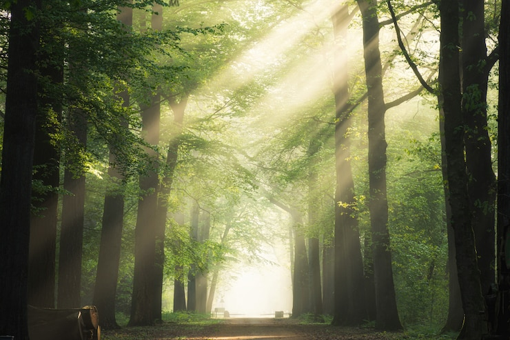

Keindahan Bumi Kita
HUTAN
Hutan adalah suatu kesatuan ekosistem berupa hamparan lahan berisi sumber daya alam hayati yang didominasi pepohonan dalam persekutuan alam lingkungannya, yang satu dengan lainnya tidak dapat dipisahkan.
Tentang Bumi Kita
Alam Adalah anugerah Tuhan yang harus kita jaga dan mensyukurinya, karena alam adalah sesuatu yang sangat penting. Menjaga lingkungan menjadi hal wajib yang harus kita lakukan sejak dini sebagai makhluk hidup (Manusia). Hal ini sangat penting untuk keberlangsungan hidup, terutama hewan dan tumbuhan yang harus kita jaga kelestariannya. Jika kita tidak merawatnya dengan baik maka akan terjadi kerusakan pada alam. Menjaga lingkungan tidak hanya teori belaka yang dipelajari di sekolah, namun harus kita jadikan sebagai pola hidup praktis. Dalam kelestarian alam kita perlu menjaganya, salah satunya dengan membiasakan diri untuk memelihara kebersihan di lingkungan sekitar kita. Dimana kita harus bisa peka terhadap apa yang dibutuhkan oleh lingkungan, seperti menanam tumbuh-tumbuhan di lingkungan sekitar serta tidak membuang sampah sembarangan. Melestarikan alam juga tidak melulu tentang hal itu, akan tetapi juga dengan mengurangi menggunakan plastik. Dengan melakukan hal tersebut itu artinya kita sudah berupaya membantu untuk kelestarikan alam, meskipun dalam lingkungan sekitar.
Keindahan Bumi Kita
Hutan adalah suatu kesatuan ekosistem berupa hamparan lahan berisi sumber daya alam hayati yang didominasi pepohonan dalam persekutuan alam lingkungannya, yang satu dengan lainnya tidak dapat dipisahkan.
Keindahan Bumi Kita
Danau adalah cekungan permukaan bumi yang digenangi air dan dikelilingi oleh daratan. Dalam proses terbentuknya, danau diklasifikasikan menjadi 8 jenis, diantaranya adalah danau vulkanik, danau tektonik, danau tektovulkanik, danau glasial, danau aliran/ladam, danau karst, danau laguna, dan danau buatan.
Keindahan Bumi Kita
Pantai atau pesisir adalah sebuah bentuk geografis yang terdiri dari pasir, dan terdapat di daerah pesisir laut. Daerah pantai menjadi batas antara daratan dan perairan laut.
Keindahan Bumi Kita
Gunung adalah suatu bentuk permukaan tanah yang letaknya jauh lebih tinggi daripada tanah-tanah di daerah sekitarnya. Gunung pada umumnya lebih besar dibandingkan dengan bukit, tetapi bukit di suatu tempat bisa jadi lebih tinggi dibandingkan dengan apa yang disebut gunung di tempat yang lain. Gunung pada umumnya memiliki lereng yang curam dan tajam atau bisa juga dikelilingi oleh puncak-puncak atau pegunungan.
Kita melakukan kebersihan secara global untuk menangani masalah yang ada di bumi ini, mulai dari membersihkan pantai, menanam ulang tumbuhan dan melakukan kegiatan gotonroyong guna memperbaiki kerusakan alam yang terjadi di bumi ini